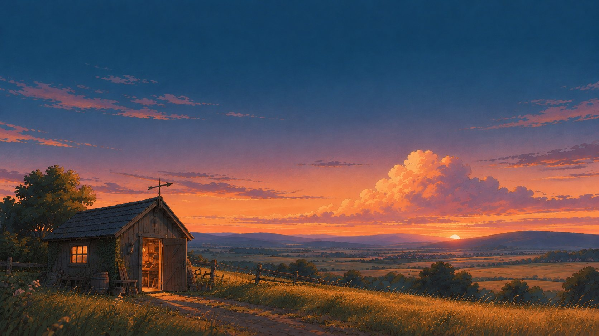

La vision
Votre bureau ne manque pas d’outils. Il manque de temps.
L’IA prépare les tâches qui se répètent : facturer, classer, répondre, relancer. Elle prépare, une personne valide.
Par Nils Davoine, fondateur d’AiAllDesk, Luxembourg.
Le résultat
Qu’est-ce que j’y gagne ?
Du temps. Et il se compte.
Je ne vends pas de l’IA, je rends des heures. Avant de toucher à quoi que ce soit, je mesure ce que la tâche vous coûte aujourd’hui. Je la mesure de nouveau après. Si le gain n’est pas là, vous le voyez en même temps que moi.
- Le temps. Les heures passées sur la tâche, par semaine et par personne.
- Le délai. Entre la demande d’un client et sa réponse, entre le travail fini et la facture partie.
- Les erreurs. Leur nombre avant, leur nombre après.
- Ce qui passe tout seul. La part des demandes préparées sans que personne ait à les reprendre.
77 jours
de travail rendus par an à une société qui a une personne aux réponses clients, trois commerciaux, quatre heures de recrutement et quatre heures de rédaction par semaine.
Mettre vos nombresCe que d’autres ont mesuré ailleurs : 15 % de demandes résolues en plus par heure avec un assistant (Brynjolfsson, Li et Raymond, Quarterly Journal of Economics, 2025) ; 40 % de temps en moins pour rédiger un texte de travail (Noy et Zhang, revue Science, 2023). Vos chiffres seront les vôtres.
La preuve
Qu’est-ce qui me prouve que cela marche ?
Ne me croyez pas sur parole.
Vous ne trouverez ici ni logos empruntés ni pourcentages sans source. Je préfère trois preuves que vous pouvez vérifier vous-même.
- Essayez. Sur la page d’accueil, trois messages attendent une réponse préparée par l’IA. C’est vous qui validez.
- Vérifiez. Chaque chiffre de ce site porte sa source, relue dans le rapport d’origine.
- Jugez sur votre cas. L’audit porte sur une vraie tâche de votre bureau. Avant de vous engager sur un projet, je fais tourner un premier cas réel chez vous.
Les erreurs
Et si l’IA se trompe ?
Elle se trompera. Quelqu’un le verra.
Aucune IA n’a raison à tous les coups, et je ne vous promettrai jamais 99 %. Ma règle est simple : l’IA dit quand elle doute. Ce qui est sûr avance, ce qui est douteux vous est montré, et c’est une personne qui décide.
- Rien ne part sans accord. Une facture, une réponse, une publication : quelqu’un valide avant l’envoi.
- Le taux d’erreur se mesure chez vous. Sur vos documents, pendant le premier cas, pas sur une plaquette.
- Tout laisse une trace. Vous voyez ce que l’IA a préparé, et qui l’a validé.
Deux lignes passent. La troisième vous est montrée.
Les données
Où vont mes données ?
Là où je l’ai écrit avec vous.
Confier ses courriels, ses factures et ses candidatures à une IA demande plus qu’une promesse. C’est pour cela que tout commence par un écrit.
- Un écrit avant de brancher. Où vos données sont traitées, par quel outil d’IA, qui y a accès. Rien n’est branché sans cet écrit.
- Le strict nécessaire. L’IA ne voit que ce que la tâche demande : une boîte de courriels, un dossier. Pas tout votre système.
- Chez vous, pas chez moi. Tout est installé sur vos propres comptes. Si vous arrêtez de travailler avec moi, rien ne reste enfermé.
- Dans les règles. Le RGPD et le règlement européen sur l’IA s’appliquent. Pour le recrutement, une personne décide toujours et les candidats sont prévenus.
Lu et accepté par vous avant le premier branchement.
La mise en route
Est-ce compliqué à mettre en place ?
Vous n’avez besoin d’aucune compétence technique.
Parmi les entreprises européennes qui ont envisagé l’IA sans y passer, 71 % citent le manque de compétences (Eurostat, 2025). Ce n’est pas votre métier. C’est le mien.
- Sur vos outils. Je branche l’IA sur ce que vous utilisez déjà : Microsoft 365, votre logiciel de facturation ou de comptabilité.
- Une tâche à la fois. On commence par une seule, celle qui vous coûte le plus.
- Votre équipe formée. Je l’accompagne jusqu’à ce que l’outil soit une habitude, pas une contrainte.
La personne et le prix
Qui est en face de moi, et combien cela coûte ?
Une personne. Pas une équipe qui change à chaque étape.
Je suis indépendant. Vous n’aurez pas un commercial, puis un chef de projet, puis un technicien : vous aurez la même personne, du premier rendez-vous au suivi. Rien de générique : je construis pour votre bureau, à votre demande, et je reste jusqu’à ce que la tâche soit réglée.
D’où je viens : trois ans de recherche en intelligence artificielle à l’Université du Luxembourg, puis l’IA mise au travail en entreprise, jusque dans un cabinet comptable du pays.
Ma méthode : je relie les logiciels que vous utilisez déjà à un seul outil, j’y branche l’IA (celle de Microsoft 365, ou un modèle qui tourne sur vos propres machines), puis je forme vos équipes.
Voir mon parcours en détail- Le premier pas est gratuit. Une heure d’audit, un compte rendu écrit, sans engagement.
- Le prix est écrit avant toute décision. Chaque projet est chiffré dans le compte rendu.
- L’État peut en payer une partie. L’aide SME Packages – AI peut prendre en charge 70 % d’un projet de 3 000 à 25 000 € hors taxes.

Six doutes levés
Montrez-moi une tâche. Je vous dis ce qu’elle peut vous rendre.
Une heure, sur une tâche qui vous prend du temps. Vous recevez ensuite un compte rendu écrit : ce qui peut changer, ce que cela vous rendrait, et ce que cela coûterait.
Écrivez à adresse de courriel à venir
Dites-moi en trois lignes : votre société, la tâche qui vous prend du temps, et quand vous joindre.
Ou écrivez-moi sur LinkedIn.
- Sans engagement.
- Ce que vous me montrez reste confidentiel.
- Réponse sous deux jours ouvrés.